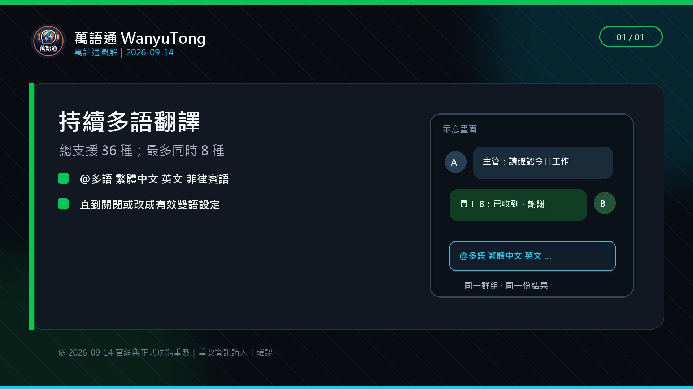

以繁體中文、英文、菲律賓語三種語言為例，主管可先設定多語模式，再輸入一則中文通知。Bot 會在同一群組輸出各語言結果，員工可直接用自己的語言回覆，主管再看翻回的繁體中文。
先確認 LINE 群組真正能顯示什麼
LINE 群組內沒有「依成員身分顯示不同 Bot 訊息」的功能。Bot 在群組發出的翻譯，全群組成員都看得到。因此「主管一句話同步多語」可以做到，但「每位員工在同一群組只看自己的語言」做不到。
可行做法用
@多語 繁體中文 英文 菲律賓語 設定需要的語言，主管輸入一則短通知，Bot 統一輸出多語結果。所有人看得到相同內容，員工只需要閱讀自己熟悉的語言段落。群組上線的六個步驟
先列出實際使用語言
只算目前群組內會使用的語言，不把未來可能需要的語言全部加進去。
指定一名群組管理者
由一人負責語言設定、測試與重要通知格式，避免多人同時切換模式。
設定多語模式
依 Bot 當下說明輸入多語指令，再用
@語言或相關查詢指令核對結果。主管先發一則測試通知
使用沒有風險的句子，例如「明天早上八點在大門集合」。
每種語言找一人回覆
請員工用自己的語言回覆收到，確認主管能看懂翻回的內容。
把固定格式公告給全群組
說明之後通知會包含主旨、時間、地點、動作與回覆要求。

主管公告請固定成五個欄位
| 欄位 | 範例 | 原因 |
|---|---|---|
| 主旨 | 明日集合通知 | 先讓員工知道訊息用途 |
| 時間 | 8 月 20 日 08:00 | 數字與日期獨立一行較容易核對 |
| 地點 | A 廠大門 | 避免只寫「老地方」 |
| 動作 | 攜帶安全帽與手套 | 一則訊息只列必要動作 |
| 回覆 | 請回覆「收到＋姓名」 | 讓主管知道誰已讀懂 |
不要把原因、背景、例外與多個任務全部塞在同一段。必要時分成兩則訊息：第一則是工作指令，第二則是補充說明。
員工回覆也要固定格式
- 已了解：收到＋姓名。
- 無法配合：無法＋原因＋可配合時間。
- 看不懂：不清楚＋指出哪一句。
- 現場異常：地點＋問題＋是否需要立即處理。
固定格式的目的不是限制員工說話，而是讓主管在大量訊息中快速找到需要處理的回覆。員工仍可用熟悉語言輸入，重要內容由主管再核對。
正式上線前檢查表
- 群組語言清單與實際成員一致。
- 每種語言都完成一次輸入與回覆測試。
- 全員知道所有群組訊息都會公開給群組成員。
- 公告已採固定欄位，不使用含糊代名詞。
- 重要工安、醫療、法律與金額內容有人工覆核人。
- 群組成員知道用什麼格式回報「看不懂」或「無法配合」。
這篇教學如何核對
- 核對日期
- 2026-08-27
- 實際流程
- 以繁體中文、英文與菲律賓語重新走過設定、主管通知、員工回覆與翻回繁體中文的流程。
- 畫面來源
- 文章圖片是去識別化的測試群組操作示範，不是客戶案例或成效報告。
- 已知限制
- Bot 發出的各語言結果會在同一群組公開顯示；教學不宣稱每位成員只會看到自己的語言。
翻譯與固定回覆能協助降低漏看，但不能消除所有管理或工安風險。完整規則請見內容編輯與測試原則。